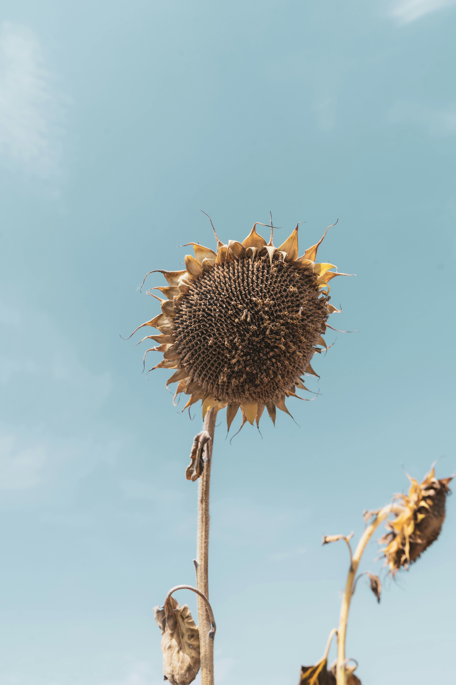

Um espaço dedicado a explorar a história, culturas e desafios que conectam a vida rural à urbana. Aqui, você vai descobrir como esses dois mundos tão distintos se coexistem!
História
Durante muito tempo, a vida no campo era o coração pulsante de muitas sociedades. As pessoas viviam em pequenas comunidades rurais, cultivando a terra, criando animais e mantendo uma relação íntima com a natureza. As famílias eram numerosas, os vizinhos se ajudavam, e o ritmo da vida seguia o ciclo das estações: plantar, colher, celebrar.
Mas tudo começou a mudar com a chegada das máquinas, das indústrias e das novas formas de trabalho. As cidades cresceram, oferecendo oportunidades que o campo não conseguia mais garantir: empregos variados, acesso à educação, hospitais, comércio e tecnologia. Muitos jovens passaram a sonhar com uma vida diferente — uma vida urbana.
Assim, aos poucos, milhares de famílias deixaram suas terras e migraram para os centros urbanos em busca de uma vida melhor. O campo se esvaziou, e a cidade se encheu de histórias, sotaques e tradições vindas de todo lugar.
Essa mudança trouxe desafios. O ritmo na cidade era acelerado, o espaço era apertado, e as relações humanas ficaram mais distantes. Muitos enfrentaram dificuldades de adaptação, saudade do verde e do silêncio do campo.
No entanto, com o tempo, a fusão entre esses dois mundos criou novas culturas. Feiras de produtos orgânicos, festas típicas no meio urbano, comunidades que resgatam tradições rurais... Tudo isso mostra que o campo não morreu: ele vive dentro da cidade, nos hábitos, nas lembranças e na resistência de quem carrega suas raízes.
Cultura
A transição do campo para a cidade não é apenas uma mudança de lugar — é também uma transformação cultural. Ao longo do tempo, o modo de viver, pensar e se expressar das populações rurais influenciou profundamente a identidade das cidades, mesmo com todas as diferenças entre esses dois mundos.
No campo, a cultura é marcada pela simplicidade, pelo contato direto com a natureza e pela valorização da tradição. Festas religiosas, músicas regionais, danças típicas, culinária caseira e o trabalho coletivo refletem uma forma de vida mais comunitária, onde os laços familiares e vizinhos são fortes.
Já nas cidades, a cultura é mais acelerada e diversificada, com acesso a tecnologias, artes contemporâneas, educação formal e uma mistura de influências vindas de várias regiões e países. O ritmo urbano é mais individualista, mas ao mesmo tempo aberto a novas ideias e mudanças constantes.
Mesmo com essas diferenças, a cultura rural está presente nas cidades: nas feiras livres, nos ritmos do forró, sertanejo e música caipira, nas festas juninas, nos alimentos típicos, no artesanato e até na linguagem popular. O campo vive dentro da cidade, muitas vezes de forma silenciosa, mas resistente.
Valorizar essa cultura é reconhecer nossas raízes. É lembrar que a identidade de um povo é construída tanto nas grandes avenidas quanto nas estradas de terra. E que o equilíbrio entre tradição e modernidade é o que fortalece uma sociedade rica em diversidade e significado.
Desafios

Desigualdade social e urbana
O rápido crescimento das cidades, causado pelo êxodo rural, resultou em periferias superlotadas, falta de moradia adequada, transporte precário e aumento da desigualdade. Muitas pessoas migraram em busca de oportunidades, mas acabaram enfrentando dificuldades para se integrar ao mercado de trabalho urbano.
Abandono e envelhecimento do campo
Com a migração da população jovem para as cidades, muitas comunidades rurais foram enfraquecidas. A mão de obra diminuiu, e áreas agrícolas passaram a ser negligenciadas, afetando a produção de alimentos e a preservação de saberes tradicionais.
Pressão sobre os serviços públicos
Crescimentos urbanos desordenados sobrecarregaram escolas, hospitais, saneamento básico e segurança pública. A falta de planejamento urbano dificultou a oferta de serviços essenciais com qualidade e equidade.
Perda da identidade cultural
Ao deixar o campo, muitas pessoas se distanciam de suas raízes culturais. Tradições, costumes e modos de vida do interior muitas vezes se perdem no ritmo acelerado e padronizado das grandes cidades.
Desequilíbrio ambiental
O avanço urbano sobre áreas verdes e a exploração intensa de recursos naturais geram impactos ambientais como poluição, desmatamento e escassez de água. A desconexão entre quem produz e quem consome também dificulta uma relação mais consciente com a natureza.
Soluções
Soluções no campo
• Investimento em infraestrutura rural.
• Programas de internet rural via satélite.
• Parcerias público-privadas para pavimentação e manutenção de estradas.
• Incentivos à agricultura familiar e agroindústrias locais.
• Qualificação profissional para jovens rurais.
• Políticas de crédito facilitado para pequenos produtores.
• Implantação de postos de saúde e escolas rurais com transporte escolar.
• Ensino a distância com apoio tecnológico.
• Telemedicina em áreas remotas.
Soluções em Áreas Urbanas
• Planejamento urbano e expansão ordenada.
• Habitação popular com acesso a transporte e serviços.
• Incentivos para permanência no campo.
• Cursos técnicos e profissionalizantes.
• Políticas públicas de inserção no mercado de trabalho.
• Investimento em saneamento básico (água, esgoto, coleta de lixo).
• Controle da expansão industrial desordenada.
• Educação ambiental nas escolas e comunidades.
Soluções em Integração Campo a Cidade
• Feiras de produtos do campo na cidade.
• Incentivo ao turismo rural e ecológico.
• Divulgação da cultura e da arte camponesa.
• Compras públicas da agricultura familiar (como merenda escolar).
• Redes de cooperativas entre produtores rurais e urbanos.
• Logística eficiente para escoar a produção do campo.